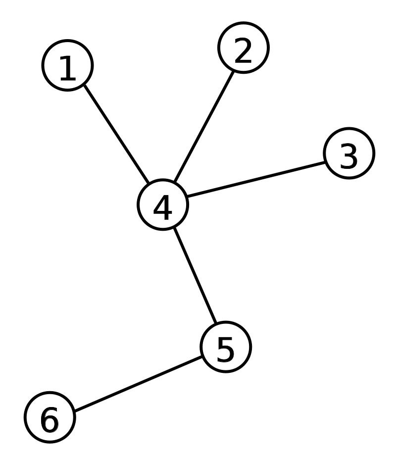
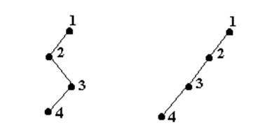
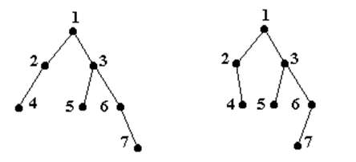

Un graf neorientat conex şi fără cicluri se numeşte arbore. Arborii reprezintă grafurile cele mai simple ca structură din clasa grafurilor conexe, ei fiind și cei mai frecvent utilizați în practică.
Termenul de „arbore” din teoria grafurilor a fost folosit pentru prima dată de Cayley în anul 1857. El a plecat de la o analogie cu noțiunea de „arbore” din botanică.

1. Caracteristici și proprietăți
descendent al nodului x/vârf = nod care se afla pe un lant elementar ce pleaca din x, altul decat cel care uneste
radacina de x;
Fiu/descendent direct al nodului x = descendent al nodului x adiacent cu x (nod adiacent cu x care nu se
află pe lanțul care unește rădăcina de nodul x);
ascendent al nodului x = nod care se află pe lanțul elementar care unește rădăcina de nodul x
părinte/tată/ascendent direct al nodului x = ascendent al nodului x adiacent cu x
frunză/terminal x = nod care nu are descendenți (are gradul 1)
Adâncime = lungimea lanțului elementar maximal care unește rădăcina cu o frunză
Înălțimea arborelui = numărul de muchii al lanțului maxim de la rădăcină la o frunză
Observație: În orice arbore există un lanț elementar unic între oricare două vârfuri.
2. Tipuri de arbori
- arbore degenerat = arbore în care orice nod care nu este terminal are exact un descendent direct/fiu

- arbore binar = arbore vid sau arbore în care orice nod are cel mult doi fii, între care se face distincție
clară, fiu stâng, fiu drept.

Observație: Arborele degenerat este un tip de arbore binar cu n vârfuri dispuse pe n niveluri.